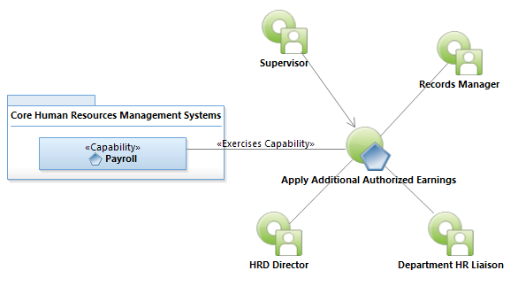

Use Case Model: Apply Additional Authorized Earnings
Architect: Aaron Brown, IT Enterprise Architect Senior
Date Last Modified: 3/26/2013
User Review: Holly Moyer, Sharon Huckabeer
Date: 3/26/2013
Supervisors prepare documentation to authorize additional earnings to be added to an employee's paycheck. Signatures required include Department HR Liaison, HRD (if required for allowance.) The process ends with signature approvals, ultimately this will result in an Employee Personnel Action Form being sent to HRD Records.
Follow link to Role Definitions

Use Case Model: Apply Additional Authorized Earnings
Activity Model: Apply Additional Authorized Earnings